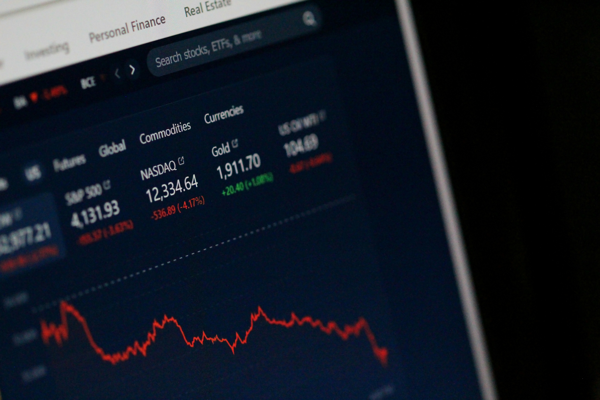

Errores comunes al invertir tu primer sueldo
Publicado el 11 de mayo de 2025 Recibir tu primer sueldo es un momento emocionante. Por primera vez, tienes la libertad de decidir qué hacer con tu dinero. Pero también es una etapa crucial donde una mala decisión puede dejarte un sabor amargo o, peor aún, desanimarte a seguir invirtiendo. Aquí te contamos los errores más comunes al dar ese primer paso.
1. Invertir sin un fondo de emergencia
Antes de pensar en acciones o criptomonedas, asegúrate de tener un fondo de emergencia de al menos 3 a 6 meses de tus gastos básicos. Este colchón te protegerá en caso de pérdida de empleo, urgencias médicas o gastos inesperados, evitando que tengas que liquidar inversiones en mal momento.
2. Dejarse llevar por la emoción
Es fácil dejarse llevar por las modas financieras. El amigo que ganó con cripto, el influencer que habla de fondos, el primo que compra acciones... Pero tus decisiones deben basarse en objetivos, no en presión social. Invierte con cabeza, no con emociones.
3. Apostarlo todo a una sola opción
Uno de los errores más frecuentes es poner todo el dinero en un solo lugar. Ya sea una acción, un fondo o un negocio. Diversificar desde el principio, aunque sea con poco capital, reduce el riesgo y aumenta la estabilidad de tu cartera.
4. No entender dónde estás poniendo tu dinero
Si no puedes explicar en una frase qué hace esa inversión y cómo gana dinero, probablemente no estás preparado para invertir en ella. Investiga, pregunta y estudia antes de mover tu dinero. Hay muchos recursos gratuitos que te pueden ayudar a entender los productos financieros.
5. Buscar beneficios rápidos
Invertir no es lo mismo que especular. Si esperas duplicar tu dinero en una semana, estás en el juego equivocado. El verdadero crecimiento se da con el tiempo, gracias al interés compuesto y a la constancia. Paciencia = éxito.
6. No revisar comisiones
Muchas veces nos centramos en la rentabilidad sin tener en cuenta las comisiones. Algunos productos “rentables” esconden altas comisiones de gestión, custodia o transacción que, a la larga, pueden comerse tus beneficios. Elige plataformas transparentes y compara.
7. No seguir aprendiendo
Invertir es una habilidad que se construye con el tiempo. Leer un blog o ver un vídeo está bien para empezar, pero no te detengas ahí. Aprende sobre diferentes tipos de activos, lee libros, sigue a expertos confiables, y sobre todo, sigue experimentando con cautela.
Conclusión
Invertir tu primer sueldo es una oportunidad excelente para construir un futuro financiero sólido. Pero para hacerlo bien, necesitas evitar estos errores comunes. Empieza pequeño, con una estrategia clara, formación continua y visión de largo plazo. Lo importante no es cuánto inviertes, sino que empieces bien.
← Volver a artículos